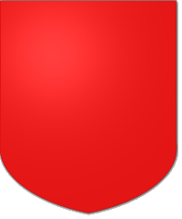
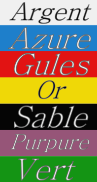

Blazonry can appear confusing and complicated but in reality it is clear and well organised. Once you have learned to recognise the parts of a blazon reading them becomes quite straightforward.
A blazon is split into parts, each part describing one thing or one area of the shield. The first part is the background and then more parts can be added, building up item by item.
We will start out very simply and just talk about the background part, or field as we should really call it.
The simplest type of field is just a plain colour. There are only a few main colours in blazonry, and they have special names, but you will soon get used to them. For example the blazon colour gules, is red.
The field always comes first in a blazon, and a field with a single colour is shown just by giving the colour name, so we can create our first, complete blazon here:
Gules
This describes a plain red shield, which may not seem very exciting but is thought to be a real historical coat of arms, belonging to the Lords and Dukes of the Albret family of Landes in France
We mentioned colours earlier - true blazonry has a very limited palette of colours, the image here shows the most common. It is worth your time to learn these names as virtually every blazon will contain one or more of them!
On the next page we will look at dividing the field into two separate areas and using a different tincture for each area.